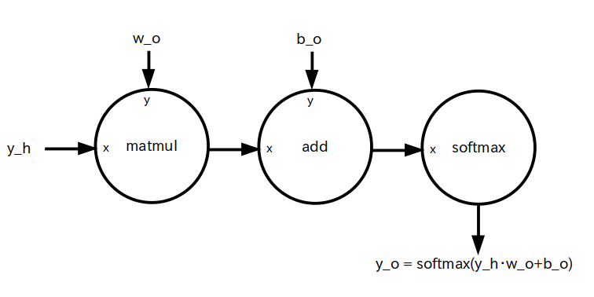

ここでは 3 層ニューラルネットワークのグラフを TensorFlow のデータフローグラフに変換してみましょう。
まず入力層のグラフを切り出して図1に示します。
入力層は N 個のパーセプトロンで出来ていて、N 個のデータが入力されます。 そこでまずは入力データから TensorFlow のデータフローグラフ化してみます。
ディジタル画像のピクセル値とか、ディジタル音声の振幅とか、センサー出力値とかは結局のところただの数値データの羅列ですので、これらは N 次元ベクトルとして表すことが出来ます。そこで 「1 x N 行列の定数」(※)として入力データをデータフロー化します(図2)。
※ 「N 次元ベクトル」や「N x 1 行列」でない理由は次のページで取り上げるディープラーニングとの兼ね合いのためです。
1 x N 行列の入力データを定数 OP ノード として表現する

次に入力層をデータフローグラフ化します。色々なやり方があるのですが、一般的に入力層のパーセプトロンは入力されたデータをそのままスルーして出力するだけのものが多いです。よって入力層は図 3 のような自作 OP ノードとして表現できます。
名前: input_layer
動作: 1 x N 行列 の x を受け取ってそのまま出力する。
次に隠れ層のグラフを切り出して図4に示します。
$w_{ij}$ ・・・ 入力層のパーセプトロン No.$i$ の出力から、隠れ層のパーセプトロン No.$j$ への入力に掛けられる重み
$b_{j}$ ・・・ 隠れ層のパーセプトロン No.$j$ のバイアス

隠れ層は K 個のパーセプトロンで出来ていて、それぞれのパーセプトロンは入力層からの出力を受取ります。 その際に重みが入力に掛けられ、更にバイアスが足されます。そして最後に活性化関数 $f()$ に通して出力されます。
$x_i$ を入力層のパーセプトロン No.$i$ からの出力とし、活性化関数 $f()$ を全てのパーセプトロンで共通とすると、隠れ層のパーセプトロン No.$j$ の出力 $y_j$ は以下の式で表されます。
\[ y_j = f \left ( \sum_{i=1}^{N} \{w_{ij}x_i\} + b_j \right ) \]
さて入力層のパーセプトロンは N 個、隠れ層のパーセプトロンは K 個ありますので、それらの出力を行列で表すと次のようになります。
入力層の出力: \[ X = [x_1, x_2, \cdots, x_N] \]
隠れ層の出力: \[ Y = [y_1, y_2, \cdots, y_K] \]
また重み $w_{ij}$ は N x K 行列、バイアス $b_{j}$ は 1 x K 行列で表すことができます。重み: \[ W = \left [ \begin{array}{ccc} w_{11} & \cdots & w_{1K} \\ \vdots & \ddots & \vdots \\ w_{N1} & \cdots & w_{NK} \end{array} \right ] \]
バイアス: \[ B = [b_1, b_2, \cdots, b_K] \]
以上の行列を使うと、隠れ層の出力 $Y$ は以下の行列演算で求められます。なお $XW$ は $X$ と $W$ の行列積、$f()$ は行列の全て要素に対して活性化関数の演算を行う事を意味します。
\[ Y = f \left ( XW + B \right ) \]
ではこの行列演算を元に隠れ層をデータフローグラフ化してみましょう。
まず重みとバイアスは前のページで触れたように定数ではなくてディープラーニングによって値が変化する変数ですので変数 OP ノードで表現します。なお要素は一般的には乱数を使って初期化します。
重みを N x K 行列の変数 OP ノード、バイアスを 1 x K 行列の変数 OP ノードとして表現する。
各要素は乱数で初期化する。
次に隠れ層をデータフローグラフ化します。活性化関数 $f()$ の選び方は色々な流儀がありますが、今回のアクティビティでは「シグモイド(sigmoid)関数」を使いたいと思います。 すると隠れ層は図 6 のような自作 OP ノードとして表現できます。
名前: hidden_layer
動作: 1 x N 行列 の入力層の出力 x、N x K 行列 の重み w、1 x K 行列 のバイアス b を受け取ってシグモイド(sigmoid)関数に通して出力する。
※行列積の順番は x・w

最後に出力層のグラフを図7に切り出して示します。
$w_{ij}$ ・・・ 隠れ層のパーセプトロン No.$i$ の出力から、出力層のパーセプトロン No.$j$ への入力に掛けられる重み
$b_{j}$ ・・・ 出力層のパーセプトロン No.$j$ のバイアス
出力層は M 個のパーセプトロンで出来ていて、それぞれのパーセプトロンは隠れ層からの出力を受取ります。 その際に重みが入力に掛けられ、更にバイアスが足されます。そして最後に活性化関数 $f()$ に通して出力されます。
つまり、隠れ層と全く同じ構造をしているので、隠れ層と同じ様なデータフローグラフとなります。
という訳で、出力層の重みとバイアスも隠れ層と同様に変数 OP ノードで表現します。
重みを K x M 行列の変数 OP ノード、バイアスを 1 x M 行列の変数 OP ノードとして表現する。
各要素は乱数で初期化する。

出力層の自作 OP ノードも図 9 のように表現できます。 やはり出力層の活性化関数 $f()$ の選び方も色々な流儀がありますが、今回のアクティビティでは「SoftMax 関数」を使いたいと思います。
名前: output_layer
動作: 1 x K 行列 の隠れ層の出力 x、K x M 行列 の重み w、1 x M 行列 のバイアス b を受け取って SoftMax 関数に通して出力する。
※行列積の順番は x・w
以上の様にして作った各層の自作 OP ノードを使うと、3層ニューラルネットワーク全体では次のようなデータフローグラフとなります。